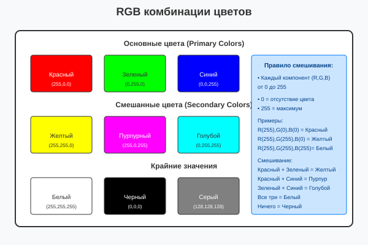

Урок 2.6: Работа с цветом
📌 Ключевые моменты этого урока:
- Color — это структура для представления цвета в ARGB формате
- RGB = Red, Green, Blue (каждый компонент от 0 до 255)
- Alpha (A) — компонент прозрачности (0=прозрачный, 255=непрозрачный)
- Color.FromArgb() создает цвет из компонентов
- Есть готовые именованные цвета (Color.Red, Color.Blue и т.д.)
- ColorDialog позволяет пользователю выбрать цвет
- Правильная работа с цветом критична для красивой графики
Структура Color — ARGB
Color в .NET представляется структурой с четырьмя компонентами:
ARGB расшифровка:
- A (Alpha) — 0=прозрачный, 255=непрозрачный, 128=полупрозрачный
- R (Red) — красный компонент (0-255)
- G (Green) — зеленый компонент (0-255)
- B (Blue) — синий компонент (0-255)
Как комбинируются RGB:

Комбинации RGB цветов
Создание цветов
Color.FromArgb() — создание из компонентов:
// С указанием Alpha (полностью непрозрачный)
Color red = Color.FromArgb(255, 255, 0, 0); // A, R, G, B
// Без Alpha (по умолчанию 255 = непрозрачный)
Color blue = Color.FromArgb(0, 0, 255); // R, G, B
// С прозрачностью
Color semiRed = Color.FromArgb(128, 255, 0, 0); // 50% прозрачный красный
// Вычисление цвета программно
int r = 128, g = 200, b = 64;
Color mixed = Color.FromArgb(r, g, b);Готовые именованные цвета (Named Colors):
// Стандартные цвета доступны как свойства Color класса
Color red = Color.Red;
Color blue = Color.Blue;
Color green = Color.Green;
Color white = Color.White;
Color black = Color.Black;
Color gray = Color.Gray;
Color yellow = Color.Yellow;
Color cyan = Color.Cyan;
Color magenta = Color.Magenta;
Color orange = Color.Orange;
Color pink = Color.Pink;
Color purple = Color.Purple;
// Есть светлые варианты
Color lightRed = Color.LightCoral;
Color lightBlue = Color.LightBlue;
Color darkGreen = Color.DarkGreen;
Color darkRed = Color.DarkRed;Color.FromName() — создание по названию:
// Из строкового названия
Color red = Color.FromName("Red");
Color blue = Color.FromName("Blue");
// Более безопасно (с проверкой)
if (Color.FromName("MyColor").IsKnownColor)
{
// Это известный цвет
}Получение компонентов цвета
Color myColor = Color.FromArgb(200, 128, 64, 32);
// Получение компонентов
int alpha = myColor.A; // 200
int red = myColor.R; // 128
int green = myColor.G; // 64
int blue = myColor.B; // 32
// Проверка свойств цвета
bool isEmpty = myColor.IsEmpty;
bool isKnown = myColor.IsKnownColor;
bool isNamed = myColor.IsNamedColor;
string name = myColor.Name;
// Практический пример: увеличить яркость
Color brighter = Color.FromArgb(
Math.Min(255, myColor.R + 50),
Math.Min(255, myColor.G + 50),
Math.Min(255, myColor.B + 50)
);ColorDialog — выбор цвета пользователем
ColorDialog предоставляет стандартное Windows диалоговое окно для выбора цвета:
Базовое использование:
ColorDialog colorDialog = new ColorDialog();
// Установка начального цвета
colorDialog.Color = Color.Red;
// Показ диалога
if (colorDialog.ShowDialog() == DialogResult.OK)
{
Color selectedColor = colorDialog.Color;
// Применить выбранный цвет
this.BackColor = selectedColor;
}Расширенные параметры:
ColorDialog colorDialog = new ColorDialog();
// Разрешить расширенные опции
colorDialog.AllowFullOpen = true; // Показать полное диалоговое окно
colorDialog.FullOpen = true; // Сразу открыть расширенное
// Разрешить выбор кастомных цветов
colorDialog.AnyColor = true;
// Установить цвета по умолчанию
colorDialog.CustomColors = new int[] {
0xFF0000, // Красный
0x00FF00, // Зеленый
0x0000FF // Синий
};
// Показ диалога
if (colorDialog.ShowDialog() == DialogResult.OK)
{
Color selectedColor = colorDialog.Color;
}Практический пример (выбор цвета в приложении):
// Событие клика кнопки
private void btnChooseColor_Click(object sender, EventArgs e)
{
ColorDialog colorDialog = new ColorDialog();
colorDialog.Color = this.BackColor; // Начальный цвет = текущий фон
colorDialog.AllowFullOpen = true;
if (colorDialog.ShowDialog() == DialogResult.OK)
{
this.BackColor = colorDialog.Color;
lblCurrentColor.Text = $"Выбран цвет: {colorDialog.Color.Name}";
}
}Работа с цветом и прозрачностью
Создание полупрозрачного цвета:
// 50% прозрачный красный
Color semiRed = Color.FromArgb(128, 255, 0, 0);
// Использование в Brush'е
SolidBrush brush = new SolidBrush(semiRed);
g.FillRectangle(brush, 10, 10, 100, 100);
// Градация прозрачности
for (int alpha = 0; alpha <= 255; alpha += 25)
{
Color color = Color.FromArgb(alpha, 0, 0, 255); // синий с разной прозрачностью
SolidBrush b = new SolidBrush(color);
g.FillRectangle(b, 10 + (alpha / 25) * 30, 10, 25, 100);
b.Dispose();
}Смешивание цветов
Простое линейное смешивание:
// Смешать два цвета поровну (50/50)
Color color1 = Color.Red;
Color color2 = Color.Blue;
Color mixed = Color.FromArgb(
(color1.R + color2.R) / 2,
(color1.G + color2.G) / 2,
(color1.B + color2.B) / 2
);
// Результат: пурпурный (смесь красного и синего)Взвешенное смешивание:
// 70% color1, 30% color2
double weight1 = 0.7;
double weight2 = 0.3;
Color weighted = Color.FromArgb(
(int)(color1.R * weight1 + color2.R * weight2),
(int)(color1.G * weight1 + color2.G * weight2),
(int)(color1.B * weight1 + color2.B * weight2)
);Цветовые модели
RGB (используется в GDI+):
RGB = Red, Green, Blue. Это аддитивная модель (смешивание свечения).
HSL/HSV (для интуитивного выбора):
HSL = Hue (оттенок), Saturation (насыщенность), Lightness (светлота). Удобнее для выбора цвета пользователем, но GDI+ использует RGB.
Конвертация RGB ↔ HSL:
// RGB в HSL вручную (упрощенный алгоритм)
public static (float H, float S, float L) RgbToHsl(int r, int g, int b)
{
float r255 = r / 255.0f;
float g255 = g / 255.0f;
float b255 = b / 255.0f;
float max = Math.Max(Math.Max(r255, g255), b255);
float min = Math.Min(Math.Min(r255, g255), b255);
float l = (max + min) / 2.0f;
if (Math.Abs(max - min) < 0.01f)
return (0, 0, l); // achromatic
float h, s;
float d = max - min;
s = l > 0.5f ? d / (2.0f - max - min) : d / (max + min);
if (Math.Abs(max - r255) < 0.01f)
h = (g255 - b255) / d + (g255 < b255 ? 6 : 0);
else if (Math.Abs(max - g255) < 0.01f)
h = (b255 - r255) / d + 2;
else
h = (r255 - g255) / d + 4;
h /= 6;
return (h, s, l);
}Best Practices при работе с цветом
- ✅ Проверяйте контрастность: черный текст на черном фоне не видно
- ✅ Используйте готовые цвета (Color.Red) для стандартных случаев
- ✅ Помните о пользователях с цветовой слепотой — не полагайтесь только на цвет
- ✅ Для полупрозрачности используйте Alpha компонент
- ✅ Тестируйте свою графику на разных мониторах (цвета выглядят по-разному)
- 🚫 Не используйте очень яркие цвета вместе (режет глаза)
Практическое задание
Задание 1: Создание цветов
- Создайте обработчик события Paint
- Нарисуйте прямоугольники с разными цветами:
private void Form1_Paint(object sender, PaintEventArgs e) { Graphics g = e.Graphics; // Готовые цвета g.FillRectangle(Brushes.Red, 10, 10, 80, 80); g.FillRectangle(Brushes.Green, 100, 10, 80, 80); g.FillRectangle(Brushes.Blue, 190, 10, 80, 80); // Создание цвета из компонентов Color customColor = Color.FromArgb(255, 128, 64); SolidBrush brush = new SolidBrush(customColor); g.FillRectangle(brush, 10, 100, 80, 80); brush.Dispose(); // Полупрозрачный цвет Color semiTransparent = Color.FromArgb(128, 255, 0, 0); brush = new SolidBrush(semiTransparent); g.FillRectangle(brush, 100, 100, 80, 80); brush.Dispose(); } - Используйте IntelliSense для изучения свойств Color (напишите "Color.")
- Запустите приложение
Задание 2: ColorDialog
- На форме добавьте кнопку из Toolbox
- Дважды кликните по кнопке — создастся обработчик Click
- Добавьте код:
private void button1_Click(object sender, EventArgs e) { ColorDialog colorDialog = new ColorDialog(); colorDialog.Color = this.BackColor; colorDialog.AllowFullOpen = true; if (colorDialog.ShowDialog() == DialogResult.OK) { this.BackColor = colorDialog.Color; } } - Запустите приложение и нажмите кнопку
- Выберите цвет в диалоговом окне
Задание 3: Смешивание цветов
- Добавьте код для смешивания цветов:
private void Form1_Paint(object sender, PaintEventArgs e) { Graphics g = e.Graphics; // Смешиваем красный и синий Color color1 = Color.Red; Color color2 = Color.Blue; Color mixed = Color.FromArgb( (color1.R + color2.R) / 2, (color1.G + color2.G) / 2, (color1.B + color2.B) / 2 ); g.FillRectangle(Brushes.Red, 10, 200, 80, 80); g.FillRectangle(Brushes.Blue, 100, 200, 80, 80); SolidBrush brush = new SolidBrush(mixed); g.FillRectangle(brush, 190, 200, 80, 80); brush.Dispose(); } - Запустите приложение
Задание 4: Градиент прозрачности
- Нарисуйте градацию прозрачности:
private void Form1_Paint(object sender, PaintEventArgs e) { Graphics g = e.Graphics; for (int alpha = 0; alpha <= 255; alpha += 25) { Color color = Color.FromArgb(alpha, 0, 0, 255); SolidBrush brush = new SolidBrush(color); g.FillRectangle(brush, 10 + (alpha / 25) * 30, 300, 25, 100); brush.Dispose(); } } - Запустите приложение
💡 Совет: Используйте IntelliSense для изучения всех свойств Color. Начните вводить "Color." — вы увидите все готовые цвета.
Проверка знаний
Ответьте на вопросы, чтобы проверить, насколько хорошо вы усвоили материал:
1. Какие компоненты входят в структуру Color?
2. Какой диалог используется для выбора цвета пользователем?
3. Что означает компонент Alpha в ARGB?
4. Какое значение Alpha означает полную прозрачность?
5. Какой метод создает цвет из компонентов RGB?
6. Какой цвет получится при смешивании красного и синего?
7. Какое значение RGB соответствует белому цвету?
8. Какое свойство Color возвращает красный компонент?